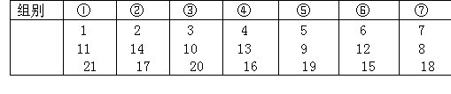

习题十五解答
1.不能.用“○”表示一个红球，用“×”表示一个白球，用“√”表示一个黄球.下面的改色没有用处.因为三种球数目仍分别是1、2、3.如果按
下列方式改色则又回到“1、2、3”的情形，可见，上述改色方式也不能使所有球同色.如第一次先取○和√改为××，最后仍回到1个○，2个√，
3个×××，也失败了。
综上所述，不能使所有球同色。
2.可以.只要按下列方式改色即可：
3.能.先把22，23，…，91这70个数分为如下7组：
22，35，36，49，50，63，64，77，78，91；
23，34，37，48，51，62，65，76，79，90；
24，33，38，47，52，61，66，75，80，89；
25，32，39，46，53，60，67，74，81，88；
26，31，40，45，54，59，68，73，82，87；
27，30，41，44，55，58，69，72，83，86；
28，29，42，43，56，57，70，71，84，85。
容易看出，每组10个数，这10个数之和都相等（事实上，每组的10个数按顺序可分成5小组，每小组的两个数之和分别为57、85、113、141和169）.再分1、2、…、21.可按下列方式分：

这样，每小组的3个数之和都等于33.把每一小组中的3个数并入前面已分成的7个组中，则每组13个数，各组之和相等.